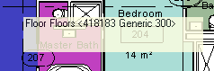
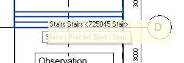

UIView Windows Coordinate Ray Casting Tooltip
I was prompted by a recent Revit API support case to revisit the custom tooltip implementation that I prepared to demonstrate the Revit 2013 API features including the View API and its UIView class.
As far as I know, the UIView class still provides the only possibility to convert back and forth between Revit model coordinates and Windows device screen points.
That functionality can be combined with the ReferenceIntersector to shoot a ray through the model to determine what Revit database element is located under the current cursor position and display a custom tooltip presenting information about it or anything else you please.
I explained the principles of doing so and the nitty-gritty implementation details of the WinTooltip sample add-in back in 2012:
- UIView and Windows Device Coordinates
- UIView, Windows Coordinates, ReferenceIntersector and My Own Tooltip
Hosted on GitHub and migrated to Revit 2017, WinTooltip now displays Revit database element information in a very rough custom tooltip like this:

If you are lucky, WinTooltip and Revit will agree on what element you are pointing at and both display information about the same item simultaneously:

By the way, you might be surprised what minimal modifications were required for the migration.
The code was not modified at all.
I only changed the .NET framework version, updated the Revit API references
and eliminated the architecture mismatch warning using DisableMismatchWarning.exe.
You can examine the exact changes made by looking at the GitHub diffs:
Please note that several important improvements on handling the Idling event properly that have been learned since 2012 have not been incorporated into this sample.
For more information about those, especially the recommendation
to avoid Idling in favour of external events except for one-off calls,
please refer to The Building Coder topic group
on Idling and external events for modeless access and driving Revit from outside.
In its current form, WinTooltip for Revit 2017 is still just a flat migration of the original Revit 2013 implementation with all its flaws, just as a proof of concept, and not suitable for production use.
I hope you find it interesting and useful despite this caveat.
Check it out in its new WinTooltip GitHub repository.